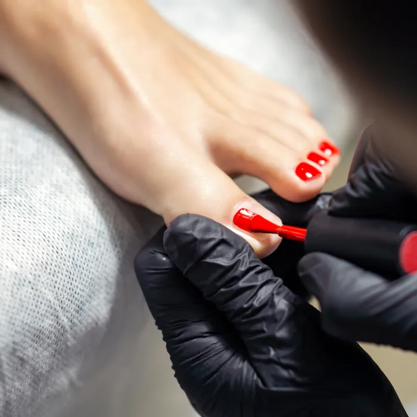
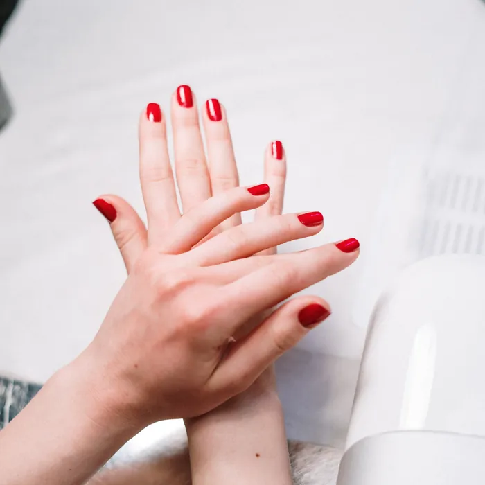
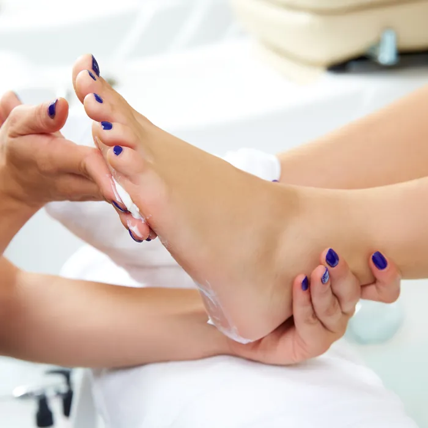
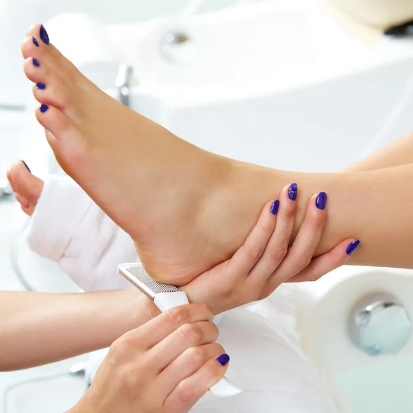
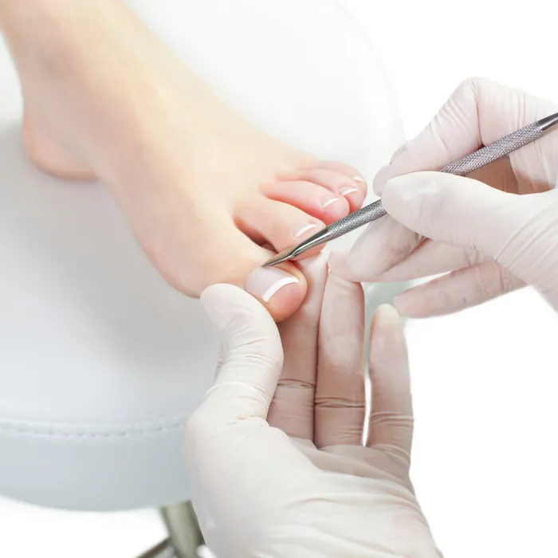

Mains & pieds
La douceur, jusqu'au bout des ongles
- Manucure douce, méthode Bleu Cocotte : un soin complet de l'ongle, réalisé en suivant un protocole précis et doux.
- Vernis semi-permanent The Gel Bottle et Marinho : des vernis végans et sans cruauté animale.
- Dépose douce, sans ponceuse, grâce à un remover enrichi en huile.
- Pédicure douce + rituel anti-callosités : bain de pieds, patchs émollients… pour retrouver des pieds de bébé !





Faites glisser pour voir les soins →